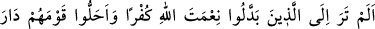
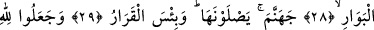
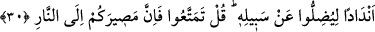

NE KÖTÜ KARARGÂH!..
28. Allah’ın nîmetine nankörlükle karşılık veren ve sonunda kavimlerini helâk
yurduna sürükleyenleri görmedin mi?
29. Onlar cehenneme girecekler. O ne kötü karargâhtır!
30. (İnsanları) Allah yolundan saptırmak için O’na ortaklar koştular. De ki:
(İstediğiniz gibi) yaşayın! Çünkü dönüşünüz ateşedir.
“Allah’ın nîmetine nankörlükle karşılık veren” Yâni, nîmetinin şükrünü nankörlüğe
çeviren, şükredeceğine nankörlük eden yahut bizzat nîmeti nankörlüğe çeviren,
demektir. Çünkü nîmete nankörlükle karşılık verince nîmet ellerinden alındı. Böylece
nîmetleri terk edip onun yerine küfrü/nankörlüğü elde etmiş oldular. Tıpkı Mekke halkı
gibi. Allah Teâlâ onları yaratıp Harem’ine yerleştirdi. Beytinin hâdimleri kıldı. Rızık
kapılarını onlara açıp genişletti. Onları Hz. Muhammed (s.a.) ile şereflendi. Bütün
bunlara rağmen onlar bu nîmetlere nankörlük ettikleri için yedi sene kıtlık çektiler.
Bedir Günü de kimisi öldürüldü, kimisi de esir edildi. Böylece nîmetleri ellerinden
çekip alınan zelil kimseler haline dönüverdiler.
Hz. Ömer ve Hz. Ali (r.anhümâ)’dan rivâyet edildiğine göre burada zikredilen
nankörler, Kureyş’in en kötüleri olan Mugîreoğulları ile Ümeyyeoğulları’dır.
Mugîreoğulları’nın işi Bedir’de bitirilmiştir. Ümeyyeoğulları’na dünyâdan bir müddet
daha istifâde imkânı tanınmıştır. Hz. Ömer ile Hz. Ali’nin bu ifâdeleri ile biraz sonra
okunacak olan: “De ki: (İstediğiniz gibi) yaşayın! Çünkü dönüşünüz ateşedir.’ âyetini
te’vil ediyor gibidir.
“Ve sonunda kavimlerini” şirk ve sapıklık yoluna götürerek “helâk yurduna
sürükleyenleri görmedin mi?” Bu ifâde, Rasûlullah (s.a.)’i hayrete sevk etmektedir.
Yâni, ‘Bunlar kadar şaşılacak birilerini gördün mü?’ demektir.
Onların kendilerinin de helâk yurduna gireceklerinden bahsedilmemesi, kavimlerini
helâk yurduna sürüklemeleri zâten buna delâlet ettiği içindir. Çünkü “O, kıyâmet günü
kavminin önünde gidiyor, işte onları ateşe getirdi.” (Hûd, 11/98) âyetinde olduğu
gibi o bunun devamıdır.
‘Sürüklemek’ Allah’ın bir fiili olduğu halde kavmin ileri gelenlerine isnâd edilmiştir.
Çünkü sürüklenmelerinin sebebi, onların inkârlarıdır. İnkârlarının sebebi ise
elebaşlarının onlara inkârı emretmiş olmasıdır.